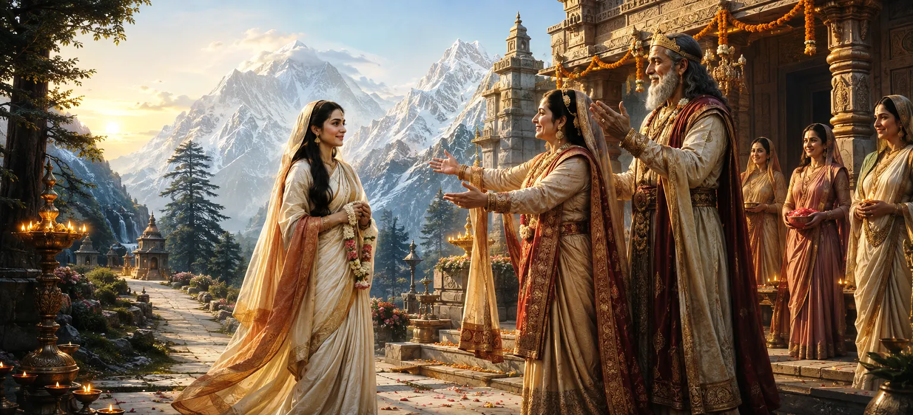

भगवान शिव की स्वीकृति प्राप्त करने और अपनी लंबे समय से पोषित आकांक्षा की पूर्ति को देखने के बाद, देवी पार्वती अपने माता-पिता के घर लौटने के लिए तैयार हुईं। उसकी वर्षों की तपस्या सफल हो गई थी, और उसकी तपस्या के पीछे का दिव्य उद्देश्य पूरा हो गया था। खुशी के साथ और दिव्य अनुमोदन से धन्य होकर, उसने हिमालय के राज्य में वापस अपनी यात्रा शुरू की।
पार्वती ने लंबे वर्षों के अनुशासन, त्याग और भक्ति पर विचार किया जिसने उन्हें इस क्षण तक पहुंचाया। उसके द्वारा सहन की गई हर कठिनाई अब अर्थपूर्ण लग रही थी, क्योंकि इसने उसे भगवान शिव और उसके लिए नियत नियति के करीब ला दिया था।
शांतिपूर्ण हृदय और नई चमक के साथ, पार्वती ने हिमालय के महल की ओर अपनी यात्रा शुरू की। जैसे ही वह गुज़री, जंगल, पहाड़ और नदियाँ उसके पवित्र मिशन की सफलता को पहचानते हुए खुशियाँ मनाते दिखे।
देवताओं ने प्रशंसा और खुशी के साथ उसकी वापसी देखी। यह जानकर कि शिव और पार्वती का मिलन निकट आ रहा है, उन्होंने उन पर आशीर्वाद बरसाया और उनकी भक्ति की सफलता का जश्न मनाया।
पार्वती की वापसी की खबर तेजी से पूरे राज्य में फैल गई। लोगों को यह जानकर खुशी हुई कि उनकी प्यारी राजकुमारी असाधारण दृढ़ संकल्प और भक्ति के माध्यम से एक पवित्र उद्देश्य पूरा करने के बाद लौट रही थी।
राजा हिमालय और रानी मैना अपनी बेटी के आगमन का बेसब्री से इंतजार कर रहे थे। हालाँकि उन्हें उनकी आध्यात्मिक उपलब्धियों पर गर्व था, फिर भी वे उन्हें दोबारा देखने और उनकी तपस्या के दौरान घटी दिव्य घटनाओं को सुनने के लिए उत्सुक थे।
जब पार्वती अंततः अपने पिता के निवास पर पहुंचीं, तो उनका अत्यधिक स्नेह और उत्सव के साथ स्वागत किया गया। उसके परिवार, परिचारकों और राज्य के लोगों ने श्रद्धा और खुशी के साथ उसका स्वागत किया।
पार्वती ने अपनी तपस्या के दौरान घटी पवित्र घटनाओं का वर्णन किया। उन्होंने शिव के प्रकट होने, उनकी स्वीकृति और उसके बाद मिलने वाले आशीर्वाद के बारे में बात की। उसके शब्दों ने उसके माता-पिता के दिलों को कृतज्ञता और आश्चर्य से भर दिया।
जैसे ही ख़ुशी की ख़बर फैली, विचार स्वाभाविक रूप से आगामी दिव्य विवाह की ओर मुड़ गए। जैसे ही शिव और पार्वती के पवित्र मिलन की योजनाएँ बनने लगीं, राज्य उत्साह से भर गया।
सच्ची भक्ति अंततः अपने पवित्र लक्ष्य को प्राप्त कर लेती है।
आध्यात्मिक सफलता प्रियजनों के लिए भी खुशी लाती है।
प्रत्येक पवित्र प्रयास व्यक्ति को दिव्य उद्देश्य के करीब ले जाता है।
नागरिकों ने पार्वती की वापसी को बड़े सौभाग्य के क्षण के रूप में मनाया। गीतों, प्रार्थनाओं और कृतज्ञता की अभिव्यक्तियों से वातावरण भर गया, जो राज्य के सामूहिक आनंद को दर्शाता है।
पार्वती की वापसी सिखाती है कि एक धार्मिक लक्ष्य में दृढ़ता अंततः सफलता की ओर ले जाती है। विश्वास और दृढ़ संकल्प के साथ सामना की जाने वाली प्रत्येक चुनौती दिव्य पूर्णता की ओर एक कदम बन जाती है।
रानी मैना ने अपनी बेटी को बड़े स्नेह से गले लगाया और उसके भविष्य के लिए उसे आशीर्वाद दिया। पार्वती पर की गई दिव्य कृपा को देखकर वह बहुत प्रसन्न हुईं।
हालाँकि पार्वती घर लौट आई थीं, फिर भी सबसे बड़ा उत्सव अभी बाकी था। पूरा राज्य अब उस दिव्य विवाह की प्रतीक्षा कर रहा था जो समस्त सृष्टि के कल्याण के लिए शिव और शक्ति को एकजुट करेगा।
"ईश्वर की ओर उठाया गया हर ईमानदार कदम अंततः पूर्णता और आनंद की ओर ले जाता है।"
भगवान शिव की स्वीकृति प्राप्त करने के बाद घर लौटकर, पार्वती अपने परिवार और राज्य में अत्यधिक खुशी लाती हैं। जैसे ही खबर फैलती है, सारी सृष्टि में सबसे पवित्र घटनाओं में से एक की तैयारी शुरू हो जाती है। शिव और पार्वती के दिव्य विवाह की तैयारियों को देखने के लिए अगले अध्याय को जारी रखें।